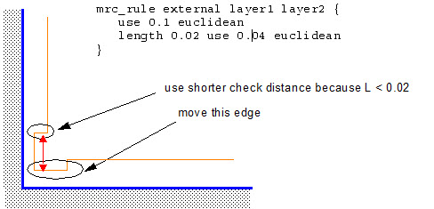
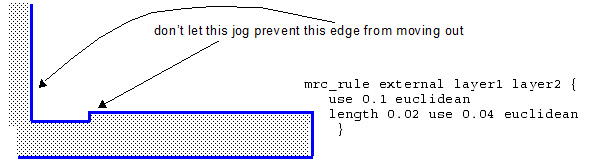
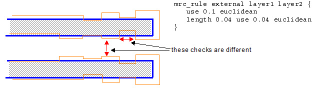
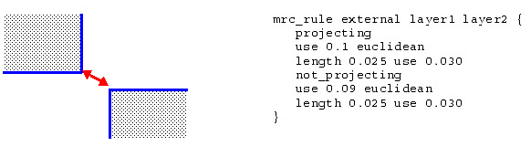
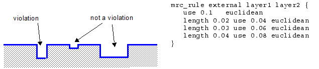

mrc_rule
Used to create external and internal spacing constraints.
Using MRC constraints in MPC is possible but not recommended. If mask level corrections are limited by MRC constraints because the MPC input data is not MRC clean, optical performance of the mask can be affected and the you might detect this only after wafer evaluation.
Instead, Siemens EDA recommends that you enforce MRC clean output during OPC runs and allow unrestricted shape correction through MPC based on a calibrated mask model.
Usage
mrc_rule {external | internal | enclosure}
layer1 [{inside | outside | not_inside | not_outside} reglayer]
[layer2 [{inside | outside | not_inside | not_outside} reglayer]] ‘{’
[[projecting [dist] | not_projecting [dist]]
use d1 {metric | d2}
[{length len use d1 {metric | d2}}...]]...
‘}’
“}”
The curly braces ({}) with quotes (“ ”) around them are meant as literals (without the quotes).
Arguments
- external | internal | enclosure
Specifies the check type. These allow specific mask constraint rules to be applied to fragments between two layers. Any opc, correction, and visible layers can be used.
By default, layers defined on the same mask will always be compared using the MRC rule that applies. When layer1 and layer2 are layer names, the rule is applied to polygon edges, which may consist of multiple fragments or be equal to a single generated jog between two fragments.
The enclosure rule restrains fragment movement if it violates the specified enclosure rule. For example:
mrc_rule enclosure tags_on_enclosed tags_on_enclosing { use num ... }where:
tags_on_enclosed — Specifies contact or via layer fragments that are enclosed by the enclosing layer.
tags_on_enclosing — Specifies the enclosing layer fragments.
use num — Measures the enclosure between tags_on_enclosed and tags_on_enclosing
- layer1 [{inside|outside|not_inside|not_outside} reglayer]
Specifies the first layer of the check. Optional specification of a region of layer1 for which this MRC rule is valid. You can optionally specify a condition that applies to fragments that meet one of the following conditions for the specified reglayer: completely “inside” the layer, completely “outside” the layer, completely “not_inside,” or completely “not_outside.”
- layer2 [{inside|outside|not_inside|not_outside} reglayer]
Optional specifies the second layer of the check. If not specified, the first layer is also used as the second layer. You can optionally specify a condition that applies to fragments that meet one of the following conditions for the specified reglayer: completely “inside” the layer, completely “outside” the layer, completely “not_inside”, or completely “not_outside.” When using several mrc_rule statements, the last statement in the sequence should be without an inside/not_inside/outside/not_outside declaration.
- projecting [dist]
Anoptionalkeyword that instructs Calibre to measure the separation between two edges only when one edge projects onto the other edge. When specifying projecting and not_projecting, use the following guidelines:
Do specify a rule without one or the other. For example, the first rule in the following example conflicts with the other two, which can cause violations:
mrc_rule external m1 { use 0.0750 projecting use 0.0825 opposite not_projecting use 0.0725 euclidean length 0.032 use 0.025 }The following does not produce conflicts:
mrc_rule external m1 { projecting use 0.0825 opposite not_projecting use 0.0725 euclidean length 0.032 use 0.025 }
You can optionally specify a projection distance limit (dist). If the projecting distance is <= dist, then the fragment is considered not projecting. Note that the following example:
mrc_rule ...{ projecting 0.01 ... not_projecting ... }is equivalent to:
mrc_rule ...{ projecting ... not_projecting 0.01 ... }and they both mean that the common projecting length should be strictly larger than 0.01 for the edges to be considered projecting.
- not_projecting [dist]
Anoptionalkeyword that instructs Calibre to measure the separation between two edges only when neither edge projects onto the other edge. You can optionally specify a projection distance limit (dist).
- use d1 {metric | d2}
Specifies the minimum distance to allow for the rule. Valid distances are >= d1. The value for d1 is required and is the default value used if none of the length-constraint rules apply (specified by either metric or d2). You must specify either metric or d2.
The possible values for metric are euclidean, opposite, and square.
When d2 is specified, it implies opposite extended with d2 as the extension value.
MPC Correction Commands shows the measurement regions created for each of the different metrics, and the dimensions used with each.
Figure 1. The Four Metrics
- length len
An optional keyword that specifies a length criteria, len. Typically, “length” keywords specified before “use” keywords indicate that the subcheck is applied only when the length criteria is met by the shortest of the two edges being compared.
Description
The mrc_rule command block allows you to specify external/internal constraint checks between layers based on the distance between fragments as well as fragment length.
The rules establish conditions to find edges for correction (or to prevent correction in certain cases). If an mrc_rule “passes”, then the edges are classified by the constraint.
For example, if you set up a rule check to identify a set of edges as a jog, typically, you do not want corrections to be applied to those edges to make the jog even larger. So if the rule passes, then the edges are flagged as a jog and MPC does not move the edges out.
On the other hand, you could have a check stating that if there are certain length constraints met, you want to move the edges outward, then in that case, MPC moves the edges as a result of the rule.
Examples
The mrc_rule command block allows the flexibility to perform a internal/external check operations for a variety of unique situations.
One Layer Constraint
The following is a simple one layer constraint example:
mrc_rule m1 { use 0.0525 }
When length is specified, it is applied to edges with length <= to the input value.
mrc_rule external m1 { use 0.0525
length 0.032 use 0.025
length 0.002 use 0
}
Two Layer Constraint
The mrc_rule command can be used to control spacing to SRAF layers. The following example uses length to set a rule for SRAF ends.
mrc_rule external m1 sraf { use 0.0725
length 0.040 use 0.06
}
Area Constraints
The mrc_rule allows you to specify rules for specific areas. Marker layers are used to define regions. Valid choices are inside, not_inside, outside, not_outside, and the marker layers are hidden type.
mrc_rule external poly not_outside SRAM_MARKER {
use 0.060
length 0.025 use 0.030
}
mrc_rule external poly outside SRAM_MARKER {
use 0.065
length 0.025 use 0.030
} Moving an Edge from a Concave Corner
The following example allows an edge at a concave corner to move outwards.

Jogs
In this example, a rule is set to ignore a small jog on the input layout when preventing an edge from moving during MPC.

Notches and Feature-To-Feature Checks
In the following example, a distinction is made between notches and feature-to-feature checks.

Corner-to-Corner Checks
The NOT_PROJECTING option can distinguish features such as corner-to-corner checks, which are not projecting onto each other, as in the following example.

Stair-Stepping
The following example implements a “stair-stepped aspect ratio” of 2:1 when features are below a certain size.
